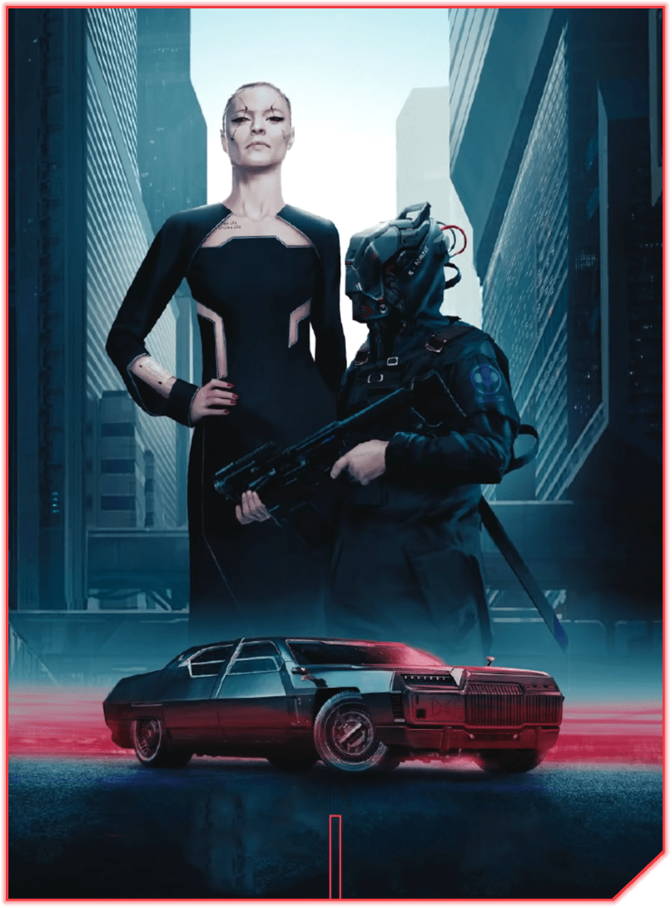
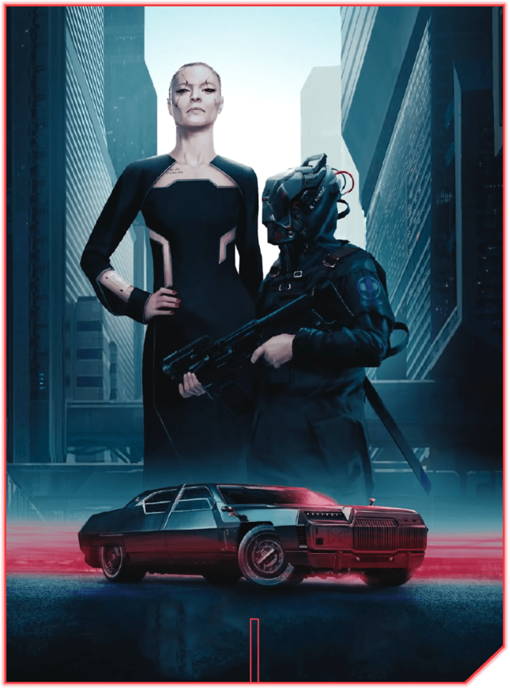
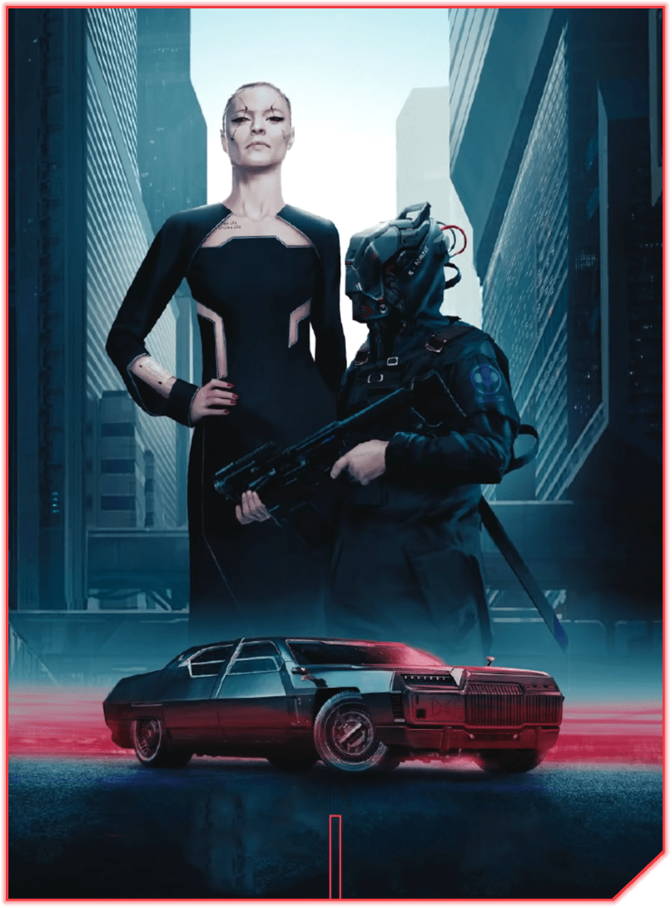
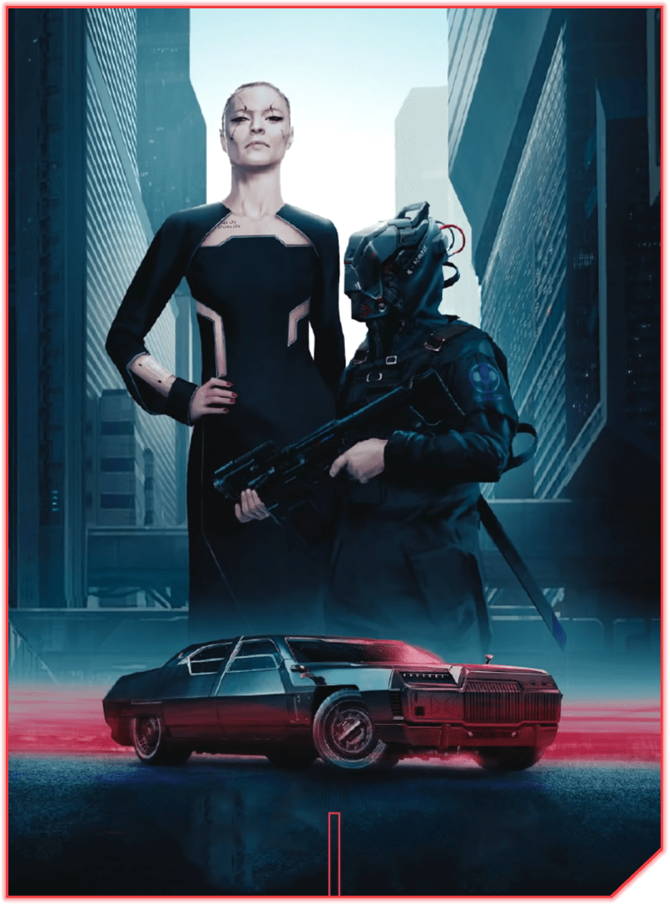

Saquear sucatas, invadir depósitos de
combustível... A vida nas estradas das terras
Baldias não era fácil, mas crescer entre
nômades tem suas vantagens. Honestidade,
integridade e liberdade: qualidades raras em
Night City e que nenhum dinheiro pode comprar.
Dizem que se, você quer entender as ruas,
tem que vivê-las. Gangues, canais, bonecas,
traficante de esquina... Você foi criado por
todos eles. Os fracos servem aos fortes – é
a lei da selva de concreto, a única em Night
City que você ainda tem que quebrar.
Poucos saem do mundo corporativo com
vida – com alma intacta, então, nem pensar.
Você passou por isso – burlou as regras,
explorou segredos e utilizou informações.
Não existe jogo limpo, só vencedores e perdedores.